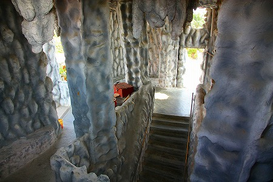

広大なパームツリーのプランテーションのど真ん中にある珍寺、
華聖宮。

いよいよ
地獄に突入しようではないか。
中華風味に綿菓子と金斗雲がフィーチャリングされたような珍妙仏殿の地下にお目当ての地獄がある。

↓この階段を下っていくと

何やら下の方がにぎやかなご様子。
おおお、現れましたよ！地獄の入り口。
地獄へ入る前に、受付のように座る城隍爺の姿が。
城隍爺とは死者を裁く道教神である
城隍神の事。つまり地獄とは切っても切れない間柄、なのである。
死者を裁く、という点では閻魔大王をはじめとする十王の皆さんと業務がかぶるのでは？との懸念もあるが城隍神は道教、十王は仏教の方々なのでその辺は上手くワークシェアリングされているのだろう。
まあ、今後地獄界が財務危機に陥った際は、城隍神と十王の部門は統合される可能性もあるが、今のところその心配はないようです。
で、城隍神といえばアシスタントはこの方々。
謝将軍と范将軍。
さて、それでは牛頭馬頭に出迎えられつつ地獄の門を潜りましょうぞ。
チャイニーズスタイルの地獄の最初の最初は死者の検分を行う事務処理的なところからはじめる。
その辺はこの旅の最初にお伝えした
清水岩廟でもお伝えしたとおり。
しかしその時点で厄介な状況に陥っている亡者の方もいるようで。
で、いきなり
閻魔大王のお出まし。
その後は緑色の極卒の皆さんがヤンチャし放題のファンキーパーティーが展開されている。
ほらこんな。
こんな。
こん…な。
蛇に責められるのがお好みなのは熱帯だからなのか？
地獄の暴れ馬車に人が轢かれています。
暴れ馬を御する極卒の表情もこの通り。
この国では
死罪に値する御法度の薬剤をキメてらっしゃる御様子。白目が真っ赤っ赤です。
で、轢かれる亡者の皆さん。ズラリと並んでいて
人間木琴状態。ムギュ！うぐっ！ぎょえ～！
一番高い音はこの人だと思うぞ。キュェ～！
で、一番低い音の人。ぐぅぅ…。
そんな地獄の光景を楽しそうに眺めるお方がいらっしゃる。
煮られるわ、刺されるわ、散々だね。
女性には極卒もやさしいのかな。
壁面は全てこんな。チョットありえない色のセンスだ。
」
竃に薪をくべる極卒。絶叫する亡者。
背後には古典的な十王信仰の壁画も示されている。壁画と立体地獄の様子が全然違うんですけど…
あちこちで繰り返される審判、
そして刑の執行。

どうも責められている方も責めてる方も真剣味が足りない、というか地獄特有の熱いパッションが伝わってこないんですけど…。
ゲンティンハイランドの清水岩廟もそうだったが、かなりハードな地獄の責め苦を受けていてもどこか表情が他人事っぽいのだ。
これがマレーシアンスタイルというものなのだろうか。
苦しそう、といっても精々↓こんな程度。もっと真面目にやらんかい、と言いたくなってしまう。
ただ穿った見方をすれば、いくら周囲に人がいないといえ、イスラム教徒が多いマレーシアだけに精一杯マイルドに抑えた表現なのかもしれない。
第五天、つまり閻魔大王の裁きによって受刑してるシーン。

よく見ると
足元が完全に水没しちゃってる。
この地獄、地下（というか半地下なのだが）の割には排水が充分でなく、しかも1階に壁や窓がない部分が多いので雨水が盛大に溜まっているようだ。
そのため
地獄全体が湿気っぽかった。
↓こちらの女性専用鍋も水が溜まっていて風呂みたいになっちゃってました。
まあ、造型のクオリティとしてはアレなのだが、薄暗い照明や湿気もあいまって一種独特の陰惨な空気を漂わせている。
暗くてよく見えなかったが、フラッシュを焚いたら牢屋でした。
↓コレは誰もいないと思っていたのでマジで恐かった。
そんな地獄エリアを過ぎるとこれから死後の世界へ入門する
ルーキー亡者達の列がある。
皆さんあの世への受付待ちをしている。
死の苦しみとかこれからの不安とか一切感じさせないピースフルな雰囲気。
列の最後尾では謎のドリンクが振舞われている。
確か、コレを口にすると生前の記憶が全部消えてしまう、というもの。
で、浮世の未練も功罪も全て忘れて死後の裁判に望むのだ。
つまりここにいるのは前世の記憶をすっかりなくした無辜の状態の人々なのだ。
ああ、だからこの表情なのね。
以前も述べたが、道教をベースにした東アジアの仏教における地獄というものはその責め苦の陰惨さも去ることながら、死後の行き先を決める裁判の緻密さが最大の特徴だ。
10回も裁判を繰り返すシステム、生前の悪行を映す浄玻璃の鏡や罪の重さを量る業の秤、善行と悪行を見分ける人頭杖といった裁定マシン…
そこには科学の実験にも似たドライで機械的、言い方を変えれば予断のない公平な裁きの有り様が強調されている。
それは悪政から成る現世のアポリアから抜け出すため、
厳正かつ公正なる裁判制度の理想を架空の世界に投影させたためなのでは、と考えている。
こんな笑みを浮かべた美人（？）姉妹も実は生前とんでもない悪党だったのかもしれない。
例えそうだとしても、本人には全く記憶がないからすっきりした表情なんですね。
ポンチな地獄だったがそのボリューム感には大満足であった。
マラッカに行くじょ！
馬来西亜珍寺大行進
珍寺大道場 HOME